Ke Li · Jewellery & Metal
Portfolio
2022 — 2024
Eden
Jewellery & Metal

{kind=link}
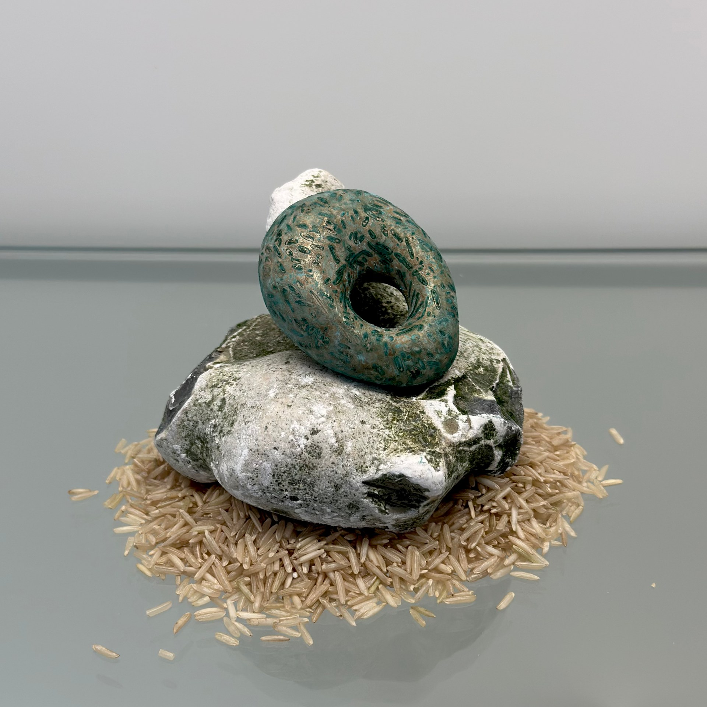
{kind=link}
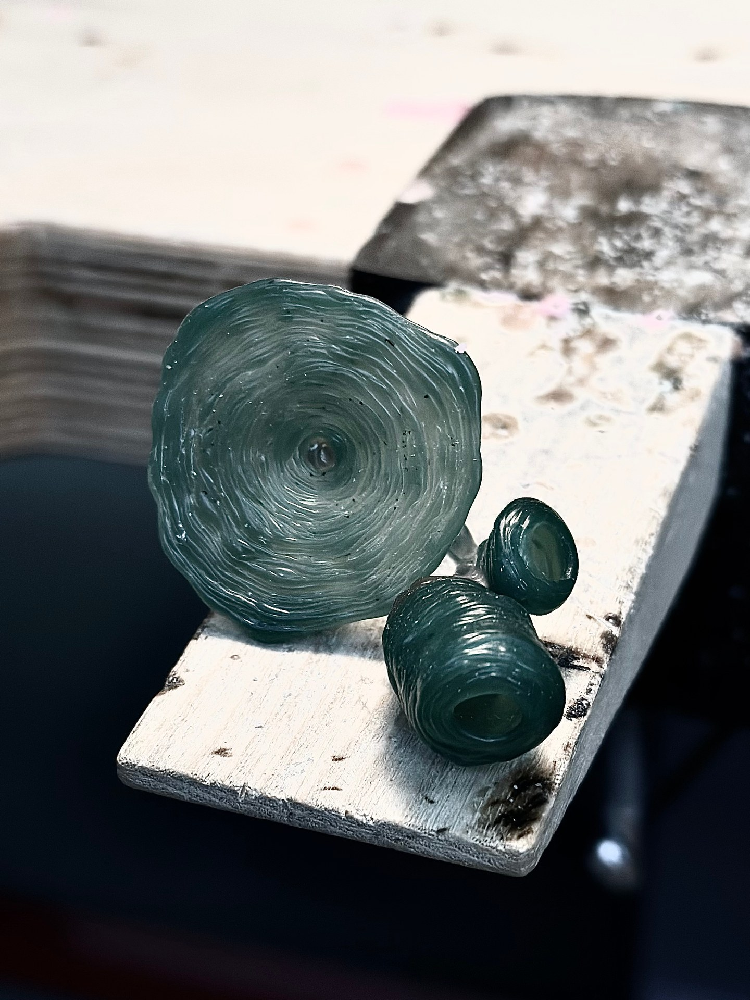
{kind=link}
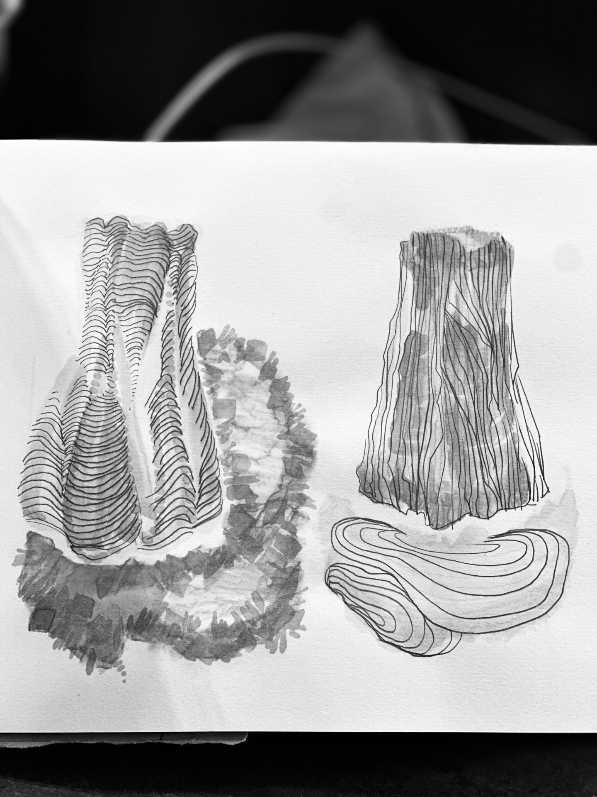
The intertwined lines resemble both the rings of trees and the ripples created by falling water droplets. This wrapping form is also derived from a state of mind emptied in nature, representing extensions of natural forms.
Jewellery & Metal Portfolio, 2023–2024 · pp. 4, 14, 18, 25. Dates follow the portfolio cover.
Symbiotic relief
Facial accessories / Hand accessories / Shoulder accessories / Necklace
Brass, platinum, casing

{kind=link}
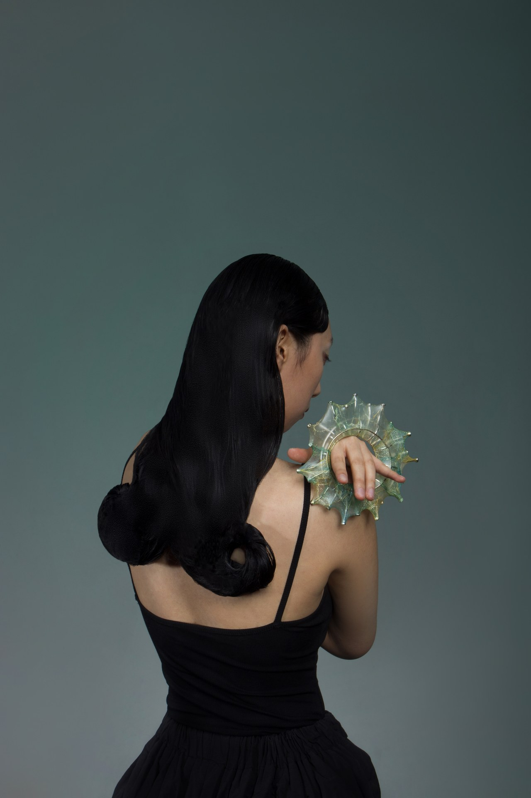
{kind=link}
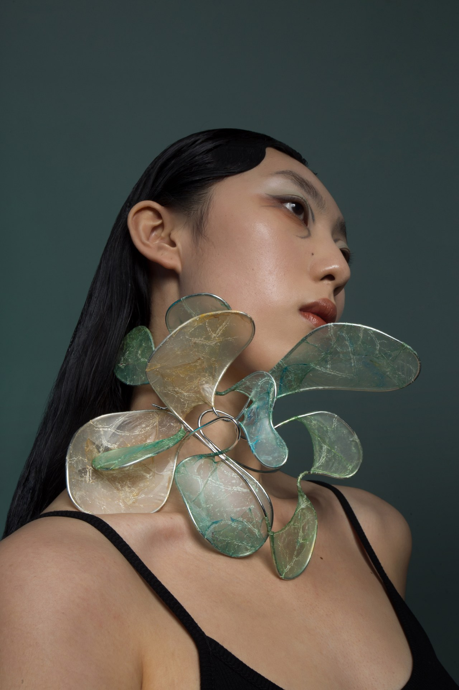

{kind=link}
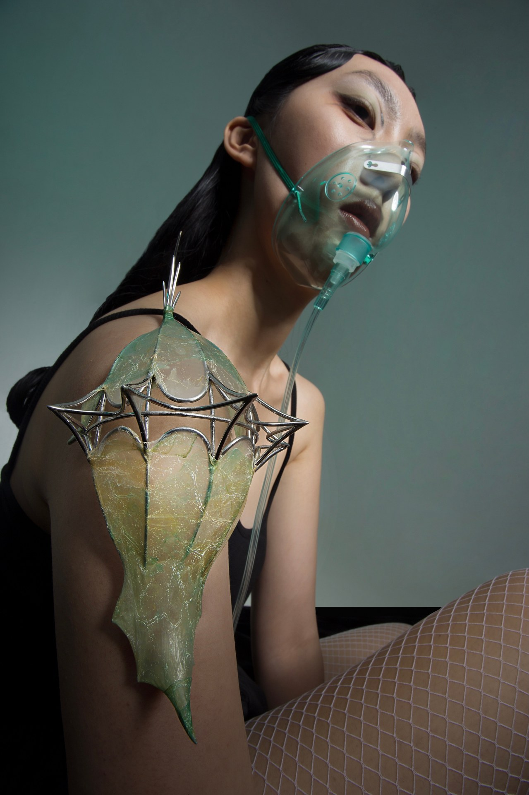

{kind=link}
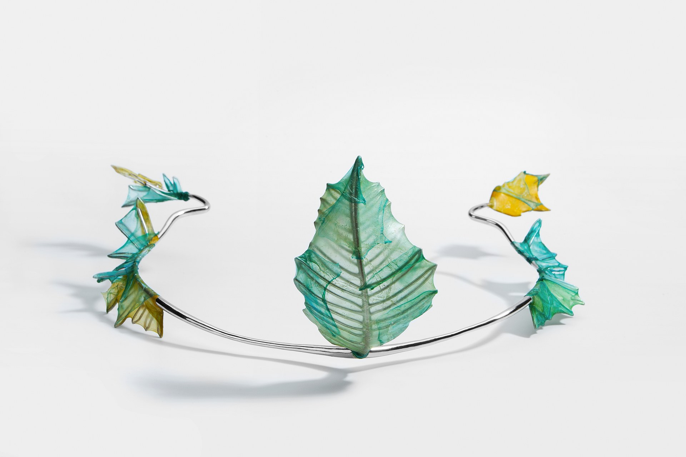
Therefore, I investigated the morphological structure of algae, and wrapped the mutated structure with the casing made of the “living materials” that I believed them to be.
LIKE — RCA · pp. 4–6
Shape of Traveling Memory
Hand accessories
Silver, balsam ash, red clay, textile fabric
{kind=link}
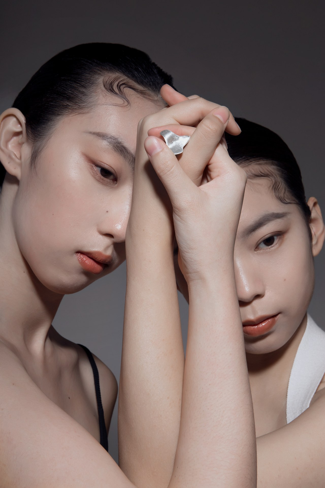
{kind=link}
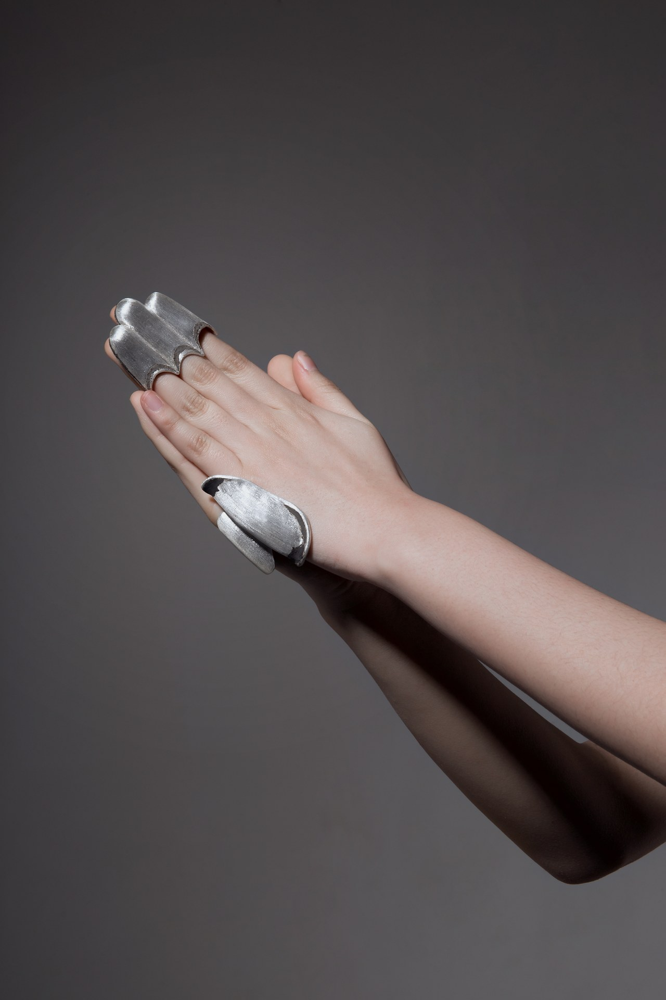
{kind=link}
{kind=link}
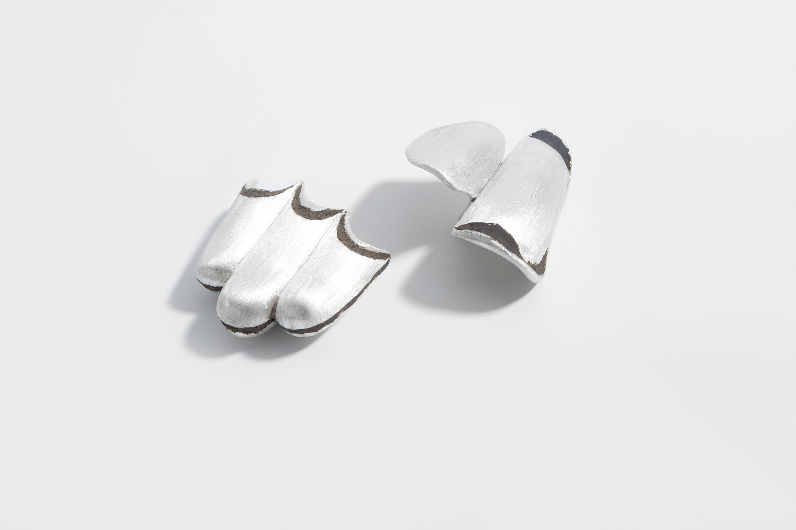
Therefore, I see “hand” as an important medium in my travel memory. It carries some of my most personal feelings about each city during my travels, as well as the smell of a city in my memory, the company of friends during the journey, and the unique traditional crafts in the city.
LIKE — RCA · pp. 7–11
Psychotherapy
Back ornament / Necklace / Hand accessories / Facial accessories
Brass, platinum, myxomycetes, nephrite, gutta percha
{kind=link}
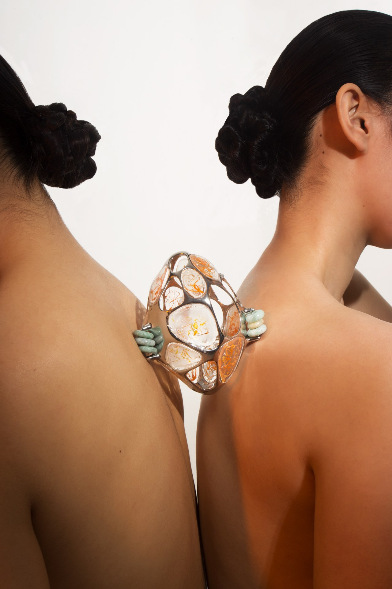
{kind=link}
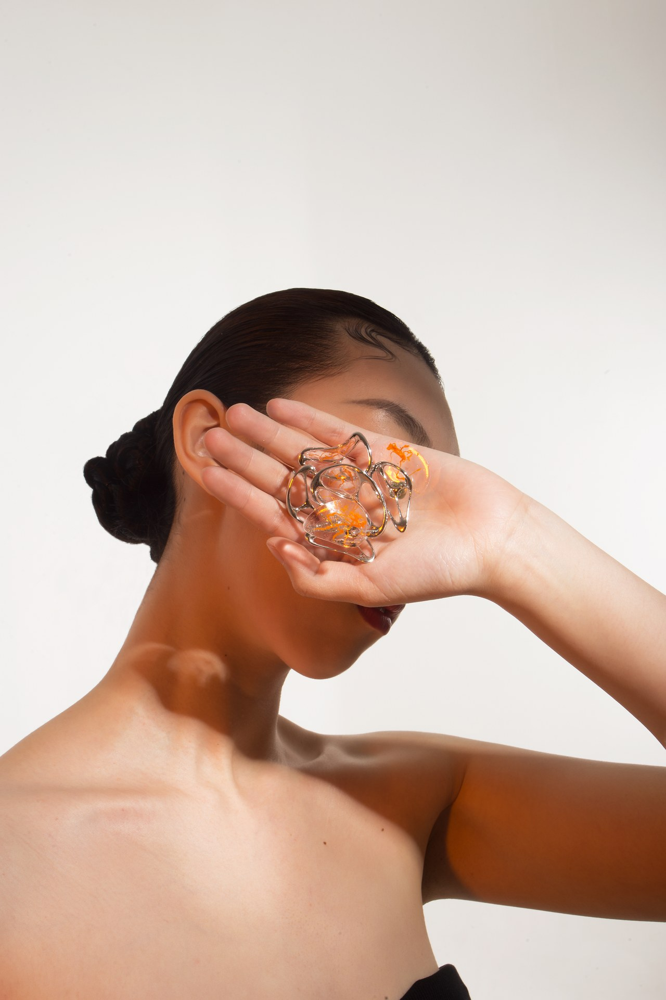
{kind=link}
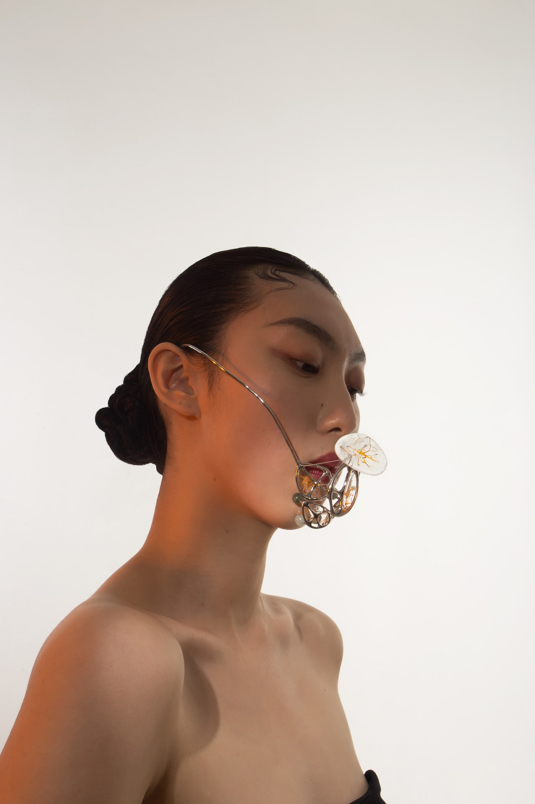
{kind=link}
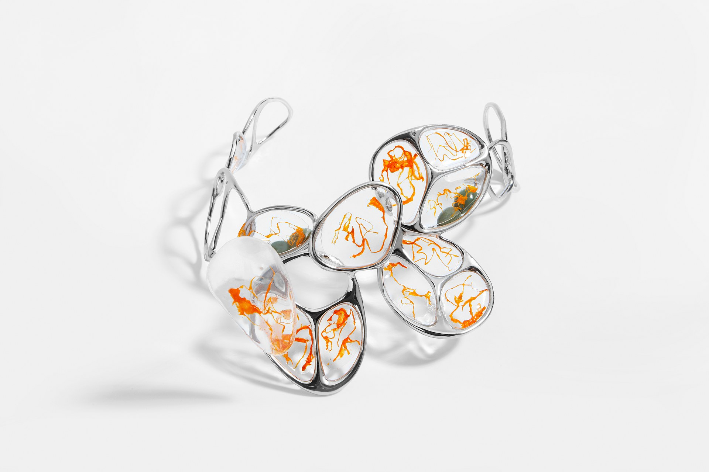
LIKE — RCA · pp. 1–3